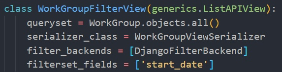
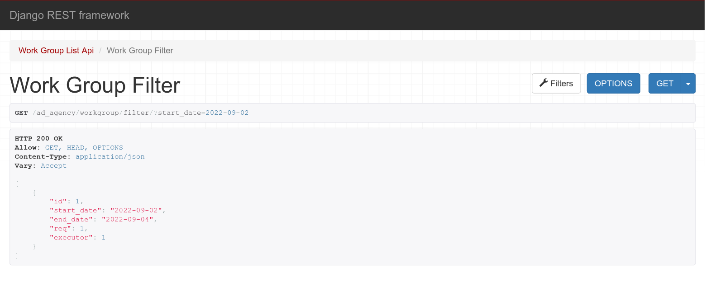
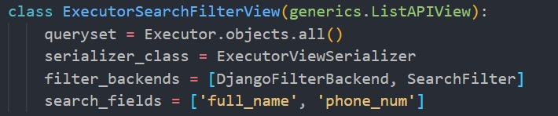
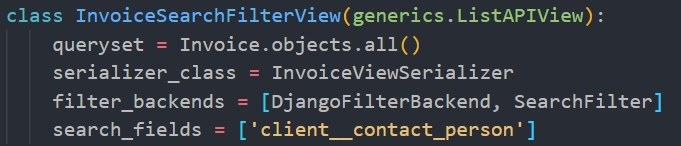
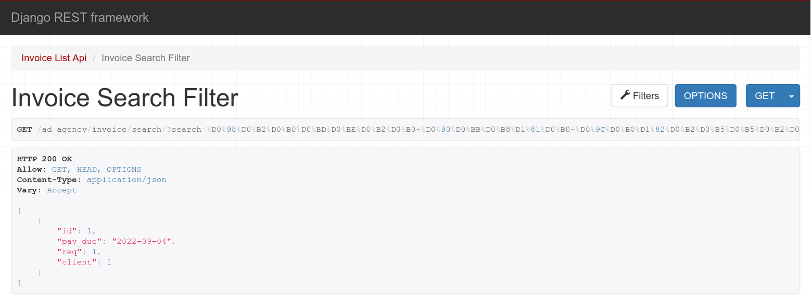
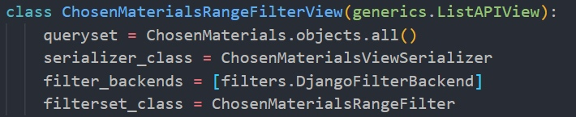
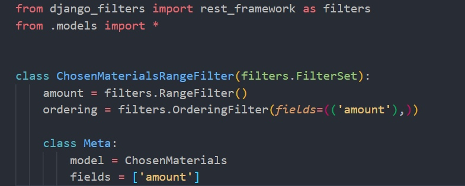
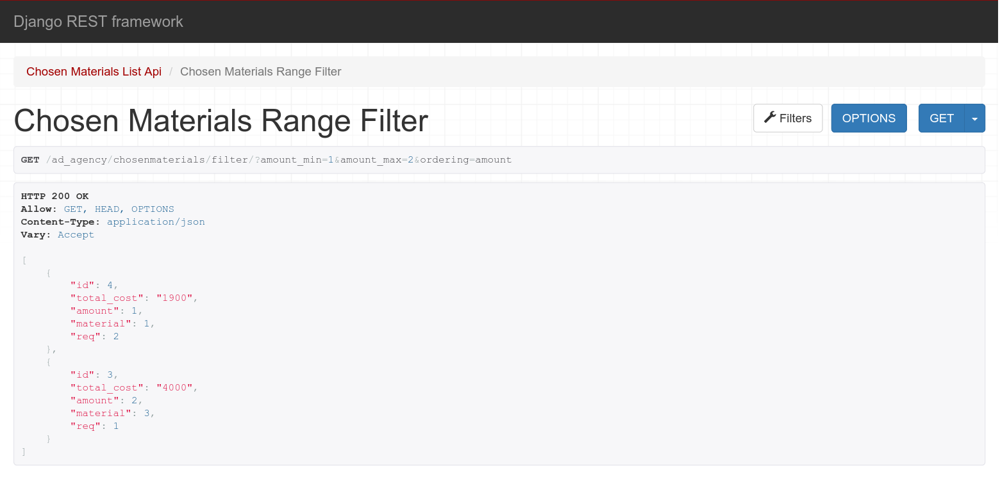

Автоматические фильтры
Фильтрация рабочих групп по дате начала работы
views.py

Результат

Поиск исполнителя по имени и номеру телефона
views.py

Результат
Поиск информации о заявке
Поиск по полям из связной таблицы Invoice.
views.py

Результат

Сортировка в диапазоне количества используемых материалов
views.py

filters.py

Результат
